نظرة عامة على منهجية البحث
تقدم هذه المقالة المنهجية الشاملة المستخدمة في مشروع البحث، بما في ذلك تقنيات جمع البيانات وطرق التحليل والتحقق.
اقرأ المزيد ←نحو إدارة فعالة لبرامج الإرشاد والتوعية ومخرجات أكاديمية وشخصية بناءة
عرض لوحات المعلوماتمرحباً بكم في منصة المشروع البحثي الاستراتيجي لقطاع التعليم والذي يهدف إلى تصميم وتطوير مؤشر مدرسي إلكتروني قائم على البيانات حول المشكلات السلوكية لطلبة الحلقة الثانية
حظيت عملية اتخاذ القرارات التربوية بناء على البيانات على اهتمام كبير في القطاع التربوي لتعزيز الأداء الأكاديمي للطلبة، والنتاجات الشخصية، وزيادة الجاهزية واحتمالية إكمال التعليم الجامعي. لذا، جاء المشروع البحثي لتطوير مؤشر إلكتروني ونظام قياس ورصد للمشكلات الطلابية السلوكية على مستوى المدارس، والمحافظات التعليمية، وعلى المستوى المركزي الوزاري في المجالات الثلاثة (الإرشاد النفسي، الإرشاد الاجتماعي، والتوعية الصحية). سيسهم هذا المؤشر في قياس ورصد مدى التزايد أو الانخفاض في هذه المشكلات. كما أنه سيعزز القرارات القائمة على البيانات في التخطيط وتنفيذ التدخلات التي تتناسب مع حجم المشكلات الطلابية في كل محافظة. وسيسهم هذا المؤشر في توفير بيانات ممنهجة، طولية، محفوظة بشكل آمن على المستوى الوطني مما يعمل على توفير مؤشرات أداء تتوافق مع خطة عمان 2040 للتعليم والمؤشرات الدولية. لذا؛ يقدم هذا المؤشر عدد من المؤشرات الفرعية للمظاهر السلوكية لدى طلبة الحلقة الثانية وما بعد الأساسي بحيث يظهر التفاوت في المظاهر السلوكية وفق ثلاث متغيرات ديموغرافية، وهي: الجنس (ذكور وإناث)، والصف الدراسي (السابع، والتاسع، والحادي عشر)، والمحافظة التعليمية (مسقط، وظفار، وجنوب الباطنة، وشمال الباطنة، ومسندم، والداخلية، وجنوب الشرقية، وشمال الشرقية، والظاهرة، والبريمي، والوسطى). ويمكنك كمختص أو باحث أو ولي أو قارئ التعامل مع هذه المؤشرات بشكل تفاعلي من خلال الضغط على القائمة المنسدلة المرافقة لكل لمؤشر لإظهار النتائج. على سبيل المثال، يمكنك اختيار محافظتي مسقط وظفار في متغير المحافظات لإظهار نتائج محافظتين فقط، أو الكل لإظهار النتائج في كافة المحافظات على صعيد سلطنة عمان. كما يمكنك اختيار خيار الذكور في متغير الجنس لإظهار نتائج المؤشر للذكور فقط أو اختيار الكل لإظهار نتائج جميع الطلبة بالغض النظر عن جنسهم. ومثال ثالث، يمكنك اختيار الصف السابع لإظهار نتائج المؤشر للصف السابع فقط أو اختيار الكل لإظهار نتائج جميع الطلبة في الصفوف الثلاثة (السابع، والتاسع، والحادي عشر). شملت المؤشرات الفرعية الآتي:
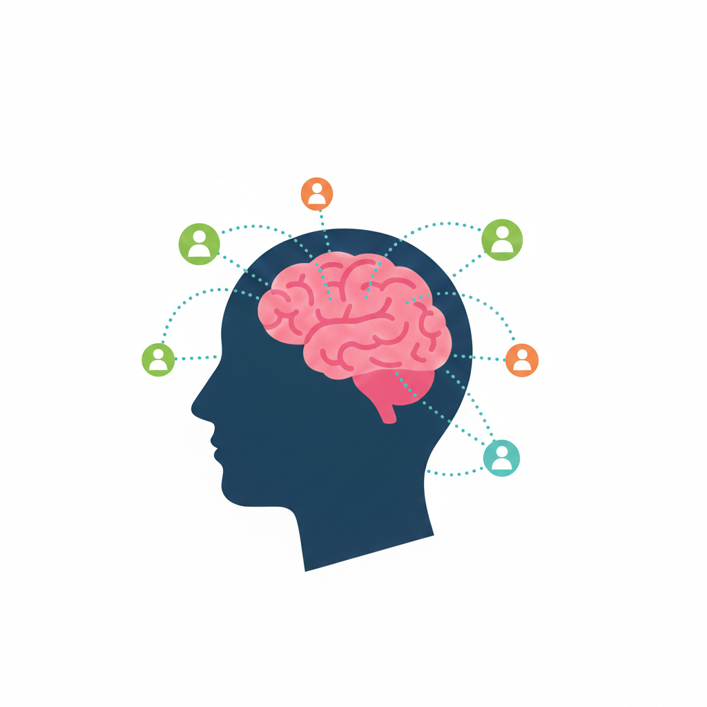
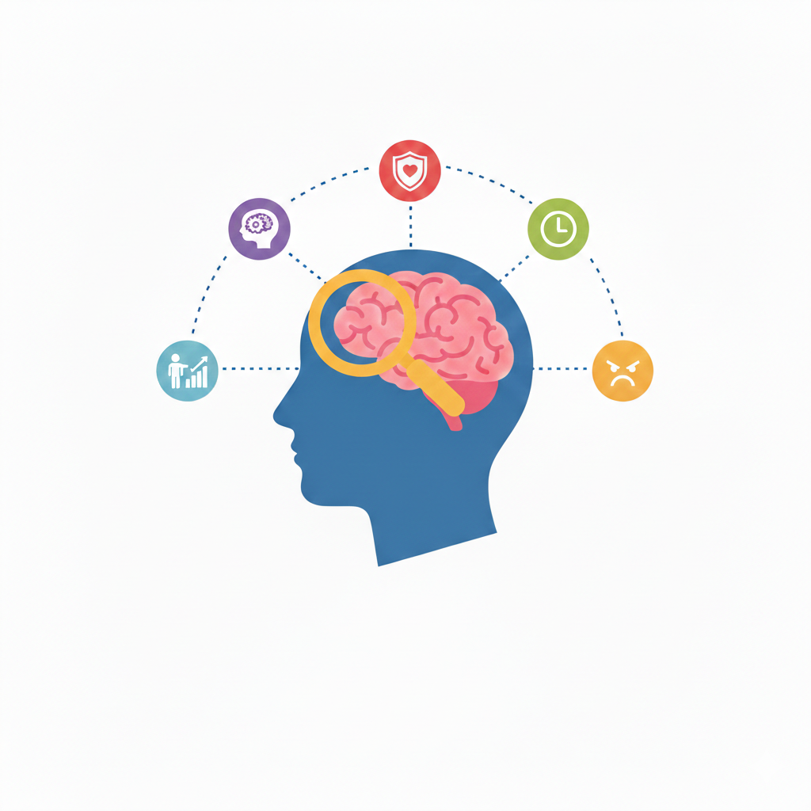
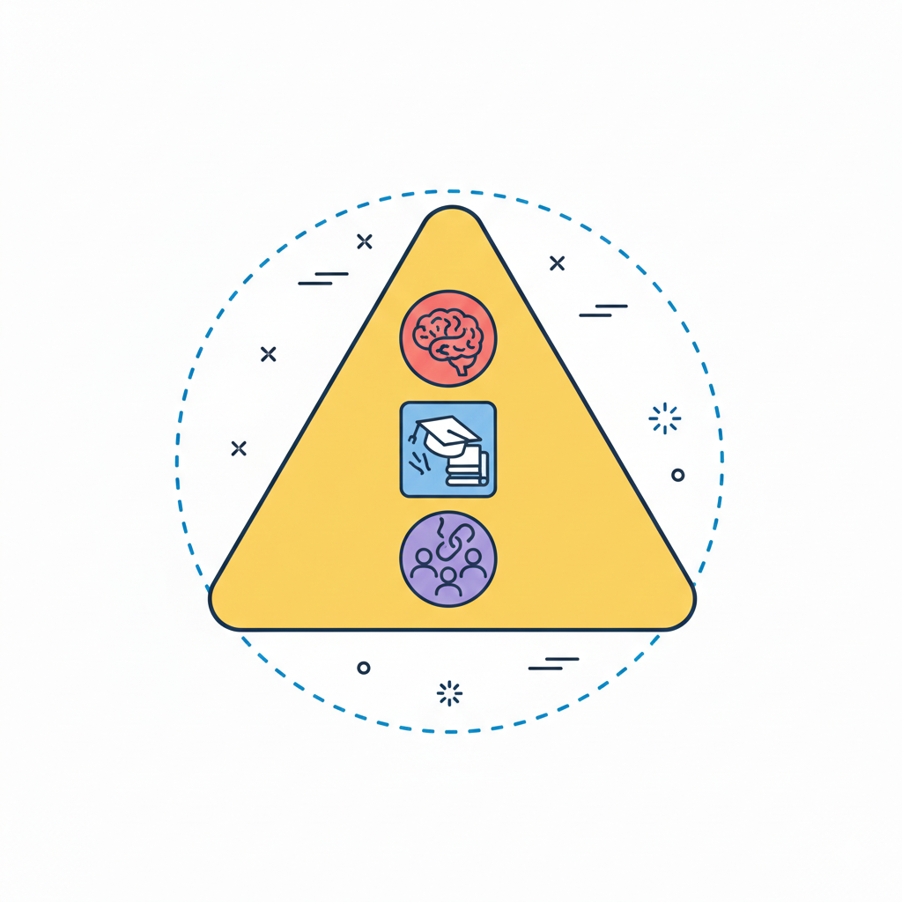
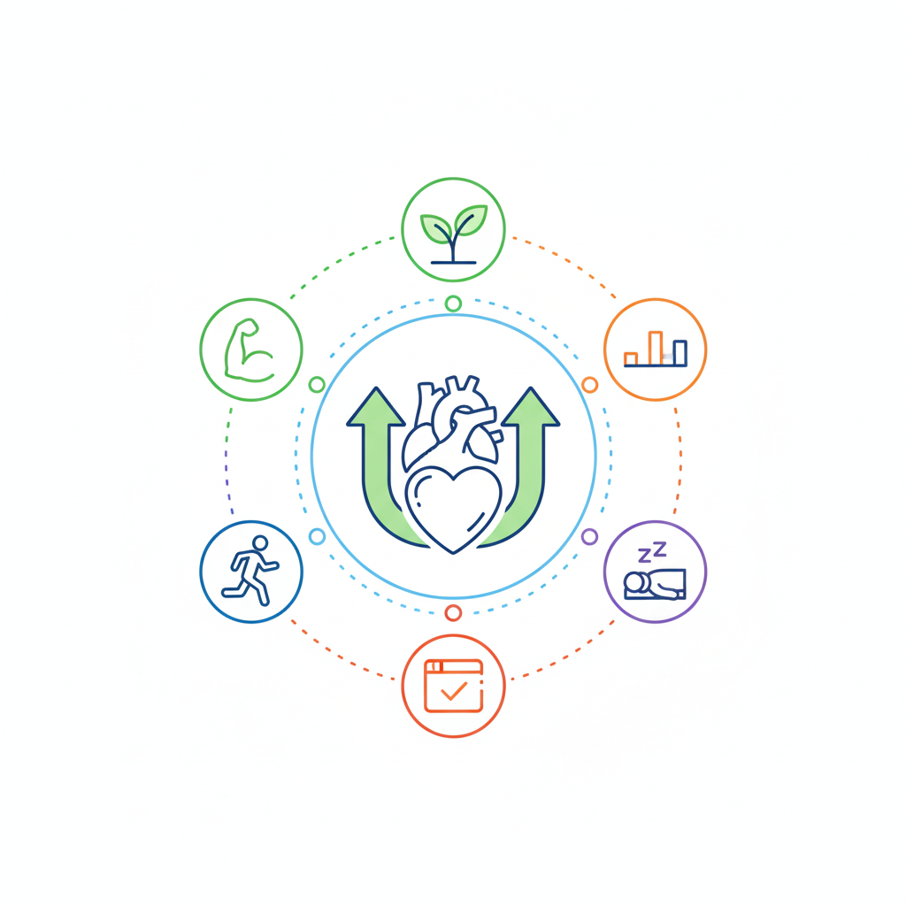
استكشف بيانات البحث عبر تصورات Tableau التفاعلية

اقرأ عن المنهجية والنتائج والرؤى
تقدم هذه المقالة المنهجية الشاملة المستخدمة في مشروع البحث، بما في ذلك تقنيات جمع البيانات وطرق التحليل والتحقق.
اقرأ المزيد ←اكتشف النتائج الرئيسية من تحليل بيانات البحث، بما في ذلك الأنماط والاتجاهات والرؤى المستمدة من لوحات المعلومات.
اقرأ المزيد ←تعرف على تقنيات وأدوات تحليل البيانات المستخدمة لمعالجة وتصور بيانات البحث، بما في ذلك الأساليب الإحصائية وأفضل ممارسات التصور.
اقرأ المزيد ←نخبة من الأكاديميين والباحثين المتخصصين في تطوير المنظومة التربوية
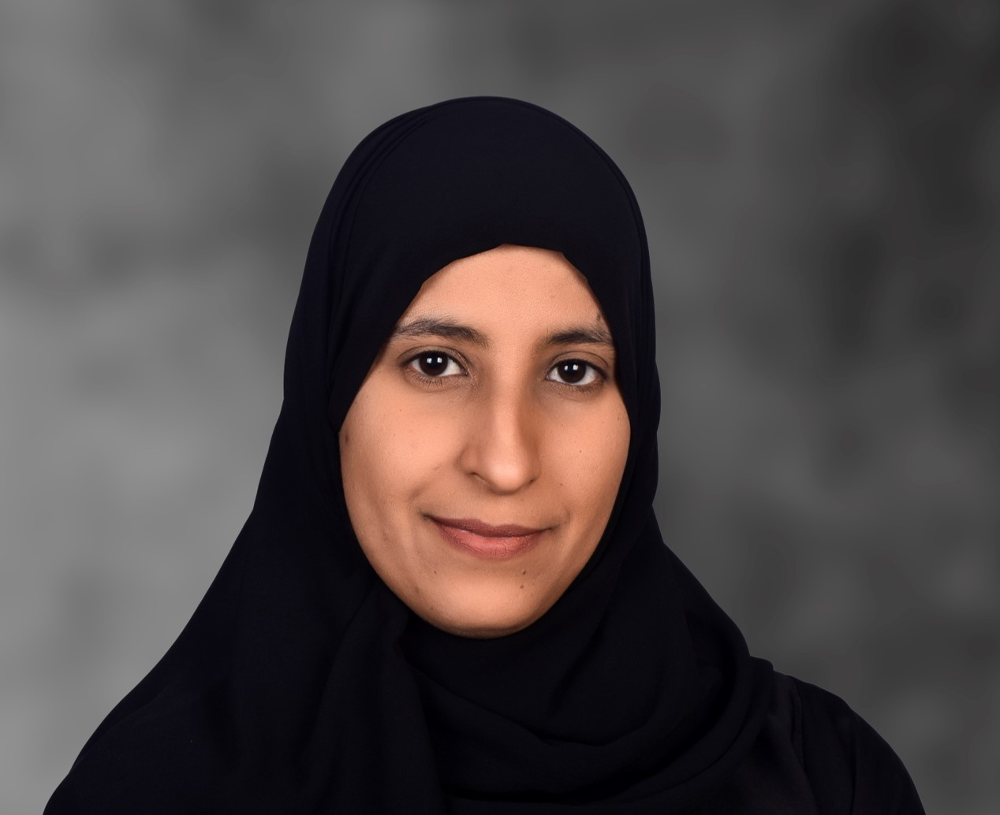
الباحث الرئيس في المشروع البحثي
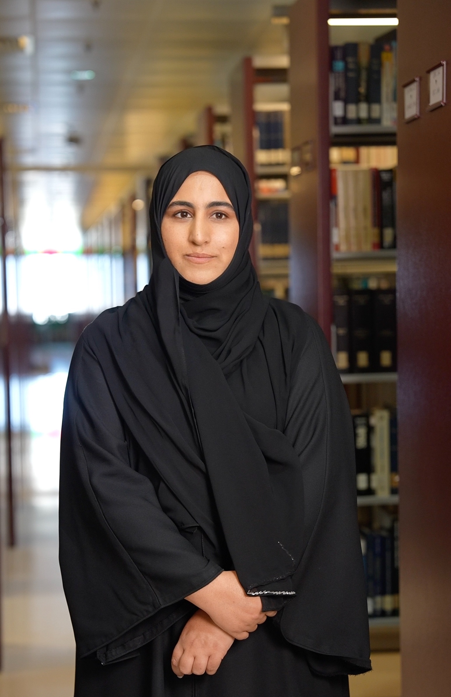
أستاذ ورئيس قسم علم النفس
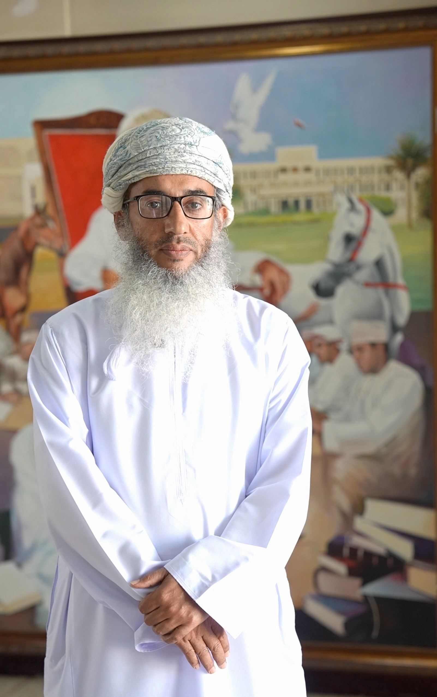
متخصصة في الإرشاد النفسي
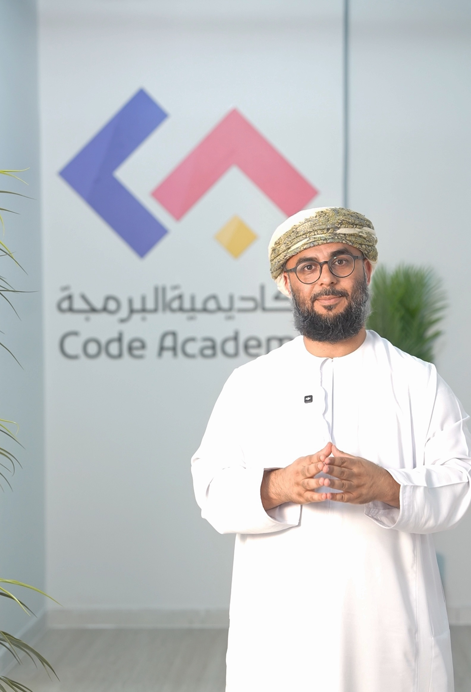
عضو فريق البحث
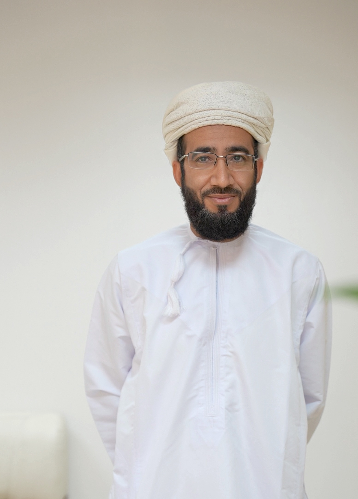
باحثة دكتوراه في علم النفس التربوي
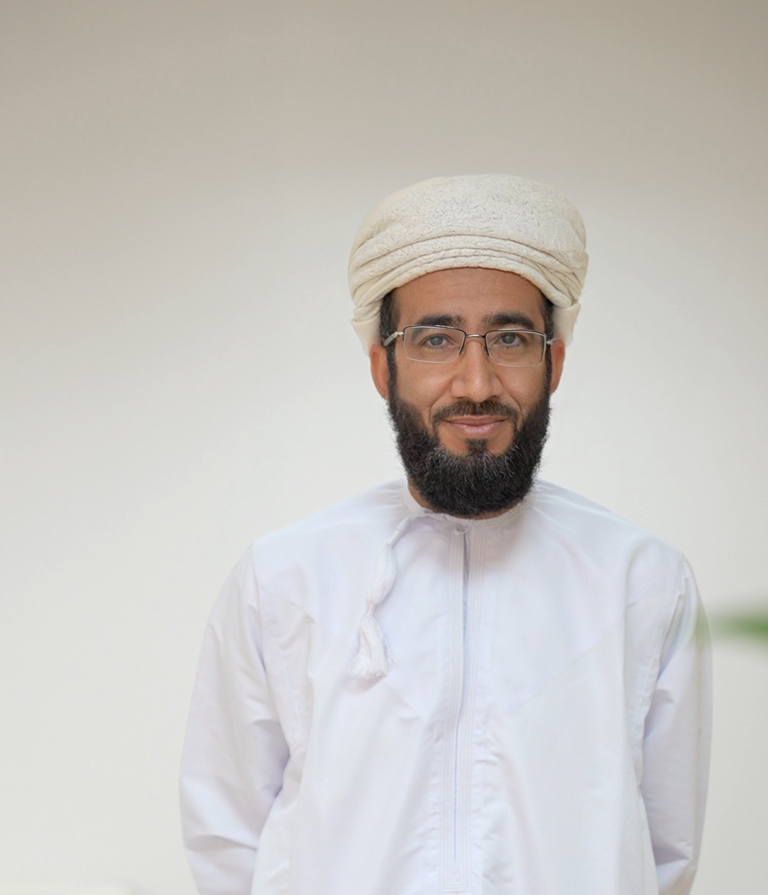
باحث مختص بوزارة التعليم
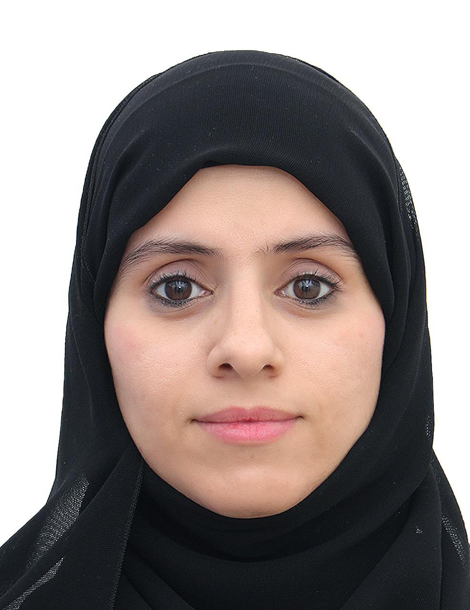
رئيس قسم التوعية الصحية
الجهات والمؤسسات الداعمة للمشروع البحثي
اسم الجهة الأولى
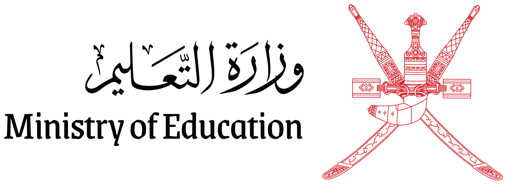
اسم الجهة الثانية
اسم الجهة الثالثة

اسم الجهة الرابعة
تواصل معنا للاستفسارات أو التعاون
البريد: research@example.com
المؤسسة: جامعتك/منظمتك